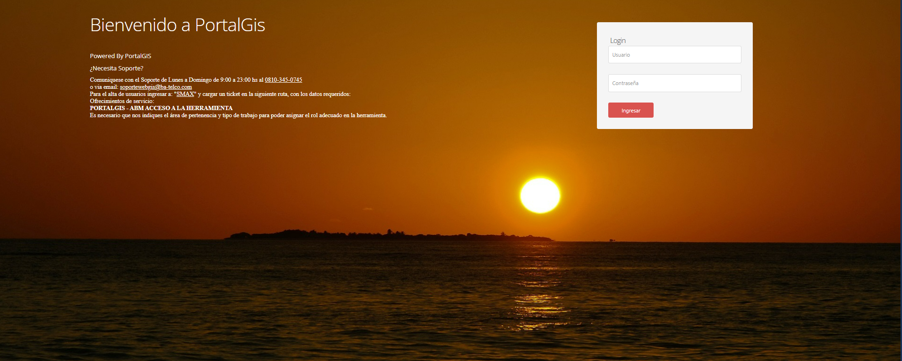
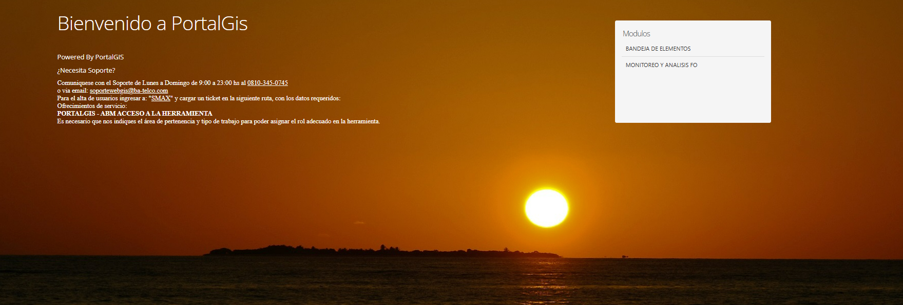
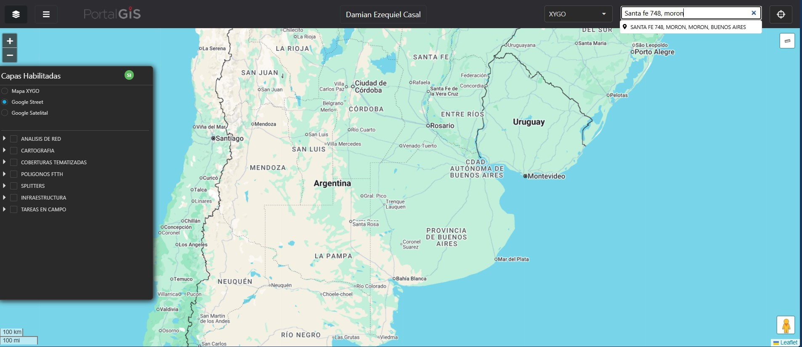
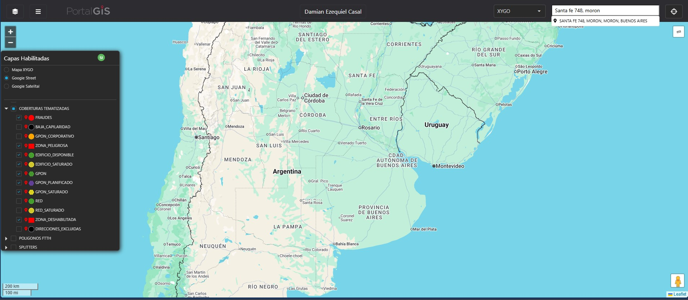
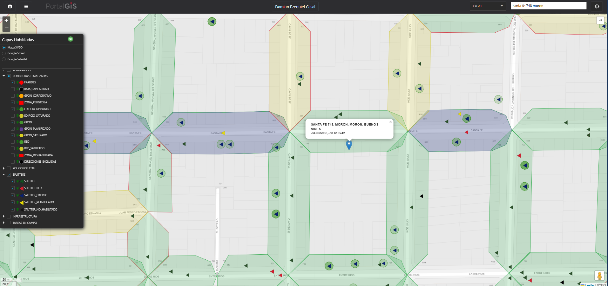

Este documento detalla el procedimiento para ingresar a la plataforma PortalGis y configurar correctamente las capas de cobertura.
Para ingresar a la plataforma debe realizarse por el siguiente Link:
Para logearse debe hacerse con el usuario de red y la contraseña correspondiente.

INTERFAZ DE LOGIN PORTALGISUna vez dentro del sistema, se debe seleccionar el modulo “BANDEJA DE ELEMENTOS”.

PANEL DE SELECCIÓN DE MÓDULOSEn el siguiente paso se visualiza las opciones de las cobertura y la búsqueda para colocar la dirección a revisar.

BARRA DE BÚSQUEDA Y VISUALIZACIÓNEn las COBERTURAS TEMATIZADAS se deben tildar las siguientes casillas:
- EDIFICIO DISPONIBLE / EDIFICIO SATURADO
- GPON / GPON SATURADO / GPON PLANIFICADO
- FRAUDE / ZONA PELIGROSA / ZONA DESHABILITADA
En el item desplegable de SPLITTERS se deben seleccionar todas las casillas.

CONFIGURACIÓN DE CAPAS Y FILTROSLos polígonos determinan la capacidad y disponibilidad de la cuadra, así como también delimitan desde donde hasta donde puede tomarse el servicio de la misma.
IMPORTANTE
Si el polígono se encuentra delineado con rojo se refiere a que el polígono no es ampliable.

EJEMPLO DE POLÍGONO ROJO (NO AMPLIABLE)